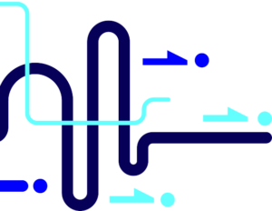

Utilisez votre propre véhicule. Faites des livraisons avec nous.
- Chauffeur indépendant
- Rémunération à la pièce livrée
- Ontario · Manitoba · Québec
Votre réussite, c’est aussi la nôtre
Vidéo en anglais, avec sous-titres en français.

Choisissez votre région pour présenter votre candidature
Choisissez votre province, puis votre ville. Vous serez dirigé directement vers le formulaire de candidature correspondant à cet emplacement.
Découvrez notre programme de jumelage des chauffeurs
Vous souhaitez vous joindre à une équipe déjà en activité ? Faites une demande et nous vous aiderons à trouver l’équipe qui vous convient.
Comment fonctionne le programme de jumelage des chauffeurs
Le programme de jumelage des chauffeurs vous permet de vous joindre à une équipe déjà en activité.
- 1Choisissez votre région ci-dessous.
- 2Faites une demande pour rejoindre une équipe.
- 3Nous vous aidons à trouver une équipe déjà en activité qui vous convient.
Tous les chauffeurs doivent tout de même satisfaire à nos exigences d’intégration.
Choisissez votre région
Votre ville ne figure pas dans la liste ? Faites quand même une demande pour rejoindre une équipe.
Comment ça fonctionne
Cliquez sur le bouton « Devenir chauffeur »
Choisissez votre région pour entamer la discussion. Cela ne vous engage à rien.
Soumettez vos documents
Rassemblez quelques documents relatifs à votre entreprise. Vous êtes votre propre patron, pas un employé qui pointe à l’arrivée.
Terminez votre intégration
Soyez prêt à prendre la route. Tous les chauffeurs suivent le même processus d’intégration.
Commencez vos livraisons
Prenez la route avec votre propre véhicule. Votre entreprise, votre véhicule.
Quelle est votre liste de lecture pour vos livraisons ?
- Quatre choix
- Un profil de chauffeur
- À vous de le découvrir !
- Juste pour le plaisir
- Il n’y a pas de mauvaises réponses !
Il ne s’agit ni d’une demande d’inscription ni d’une vérification d’admissibilité.
En cours de lecture
Présentez votre candidature comme chauffeurVous pensez que vos amis ont le même profil que vous ? Partagez votre liste de lecture avec eux !
Les prérequis pour commencer
- Un permis de conduire complet
- Maximum 3 points d’inaptitude au dossier de conduite
- Une vérification des antécédents judiciaires datant de moins de 90 jours et n’ayant pas été obtenue pour une autre entreprise de transport
- Véhicule adapté, assurances, documents obligatoires et outils de travail
Véhicules pour lesquels nous recrutons
Mini-fourgonnettes, fourgons utilitaires comme le Mercedes Sprinter ou le Ford Transit, ainsi que certains petits camions cubes.
Les véhicules acceptés peuvent varier selon l’emplacement et le contrat. Vous saurez quels véhicules sont admissibles dans votre région au moment de présenter votre candidature.
Comment fonctionne la rémunération des chauffeurs contractuels
Vous travaillez à titre de travailleur autonome et non comme employé. Vous êtes rémunéré à la pièce livrée, et une surcharge de carburant peut s’appliquer selon le contrat ou le programme. Vous fournissez votre propre véhicule, le carburant et les outils nécessaires.
La rémunération dépend de votre rendement. Chaque chauffeur est différent, et les revenus ne sont jamais prévus ni garantis.
Questions posées par les chauffeurs
S’agit-il d’un emploi ?
Non. Il s’agit de contrats de sous-traitance indépendante et non d’un lien d’emploi.
Comment est-ce que je vais être payé ?
Vous êtes rémunéré par article livré. Une surcharge de carburant peut s’appliquer selon les modalités de votre contrat ou programme. Vos revenus dépendent entièrement de votre rendement ; nous ne fournissons aucune estimation ni garantie concernant les gains, les heures de travail ou les itinéraires.
Que dois-je fournir ?
Votre propre véhicule adéquat, une assurance, la documentation requise, le carburant et les outils nécessaires pour effectuer les livraisons.
Tous les chauffeurs ont-ils les mêmes exigences ?
Oui. Chaque chauffeur doit répondre à nos exigences d’intégration, ce qui inclut un permis de conduire complet, un maximum de 3 points d’inaptitude et une vérification des antécédents judiciaires de moins de 90 jours qui n’a pas été effectuée pour une autre entreprise de transport.
Quels types de véhicules sont autorisés ?
Nous recherchons des mini-fourgonnettes, des fourgons utilitaires et certains petits camions cubes. Les véhicules acceptés varient selon la région.
Puis-je me joindre à une équipe déjà en activité ?
Oui. Consultez notre programme de jumelage des chauffeurs dans la section des emplacements ci-dessus et faites une demande pour rejoindre une équipe.
Votre réussite, c’est aussi la nôtre
Prêt à prendre la route avec Precision ? Choisissez votre région et présentez votre candidature.
Présentez votre candidature comme chauffeur